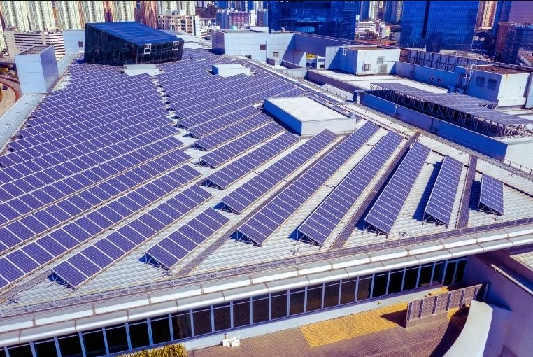
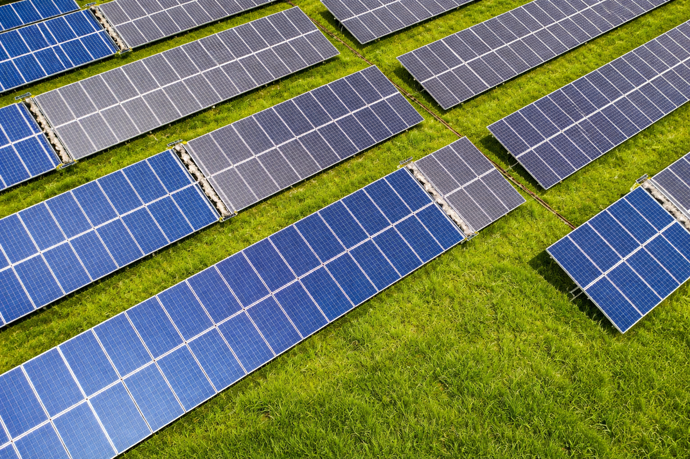

SunClean Tech solutions are designed for plant owners, EPCs, O&M teams, and solar businesses that want reliable, scalable, and efficient panel cleaning operations.
Our products are designed to fit different stages of the solar value chain, from installation and commissioning to long-term plant maintenance and performance optimization.
Improve plant performance and reduce operational inefficiencies with structured robotic cleaning systems.
Protect energy generation and strengthen long-term plant profitability.
Add future-ready cleaning solutions into project planning and client delivery.
Improve cleaning efficiency and reduce dependence on inconsistent manual operations.

Beyond utility-scale environments, SunClean systems can also support commercial and industrial solar users looking for improved cleaning consistency and operational control.
This is especially useful for:
At SunClean Tech, we do not just supply machines. We help our clients think about solar cleaning as part of a broader plant performance strategy.
Solutions built to fit real site conditions and cleaning requirements.
Designed for consistent, scheduled, and structured solar maintenance.
Focused on creating sustainable value over the lifecycle of the plant.
As the solar sector expands, cleaning will become even more important to plant profitability and operational excellence.
SunClean Tech is committed to supporting clients who are serious about:

Whether you are an owner, EPC, O&M team, or solar developer, SunClean Tech can help you identify the right robotic cleaning system for your operation.